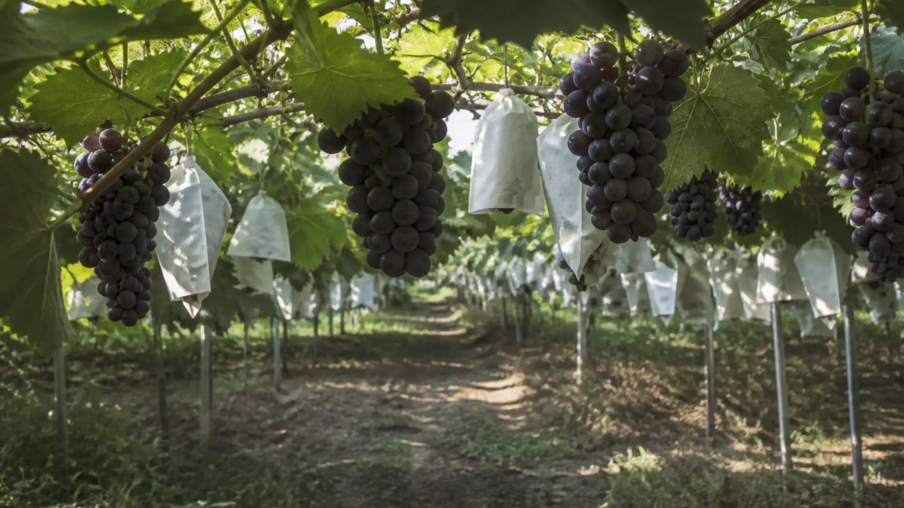

SEPTEMBER
서두르지 않아도 된다
8월호를 읽고 나면 아마 가고 싶어질 텐데, 서두르지 않아도 된다. 9월 안성은 거의 매 주말 무언가가 열린다.
아래 일정은 아직 열리지 않은 축제다. 다녀온 것처럼 쓰지 않았다. 한눈에 보기 표로 훑고, 가고 싶은 날만 카드에서 고르면 된다.
글 안성마춤 웹진 편집부 · 사진 안성마춤 웹진 편집부

AT A GLANCE
한눈에 보기
| 날짜 | 요일 | 행사 | 장소 |
|---|---|---|---|
| 9월 5일 | 토 | 금광달빛축제 | 금광호수 수석정수변화원 |
| 9월 18~20일 | 금~일 | 안성맞춤포도축제 | 서운면 양촌리 제4산업단지 일원 |
| 9월 19~20일 | 토~일 | 일죽 청미음악회 | 청미천 둔치공원 |
| 9월 24~25일 | 목~금 | 죽주대고려문화축제 | 동안성시민복지센터 일원 |
10월 초 일정은 아래 「10월, 미리 알아두세요」를 보세요.
01 · 에디터 픽
금광호수
금광달빛축제
이번 호 03 코스와 그대로 이어진다. 낮에 걸었던 수석정수변화원을 밤에 다시 보는 구성이다. 낮의 호수와 밤의 호수는 다른 장소다. 체험부스와 공연이 예정돼 있다.

- 장소
- 시간
방문 전 공식 안내를 확인해 주세요
- 입장
방문 전 공식 안내를 확인해 주세요
- 주차
- 문의
- 이어 보기
02 · 에디터 픽
서운면
안성맞춤포도축제
포도 홍보와 시식, 품평회가 열린다. 축제장에서도 ‘안성 포도’라는 큰 이름만 보지 말고 농가명과 품종, 수확 정보를 살피시길. 백 개의 봉지에는 백 개의 밭이 있다.

- 장소
- 시간
방문 전 공식 안내를 확인해 주세요
- 입장
방문 전 공식 안내를 확인해 주세요
- 주차
방문 전 공식 안내를 확인해 주세요
- 문의
- 이어 보기
03
일죽
일죽 청미음악회
청미천 둔치공원에서 열리는 야외 음악회. 강가에서 저녁을 보내기 좋은 시기다. 세부 프로그램은 방문 전 공식 안내를 확인해 주세요.
- 장소
- 시간
방문 전 공식 안내를 확인해 주세요
- 입장
방문 전 공식 안내를 확인해 주세요
- 주차
방문 전 공식 안내를 확인해 주세요
- 문의
04
동안성
죽주대고려문화축제
동안성시민복지센터 일원에서 열린다. 평일 목·금 개최이므로, 주말 방문을 계획한다면 날짜를 한 번 더 보시면 좋다.
- 장소
- 시간
방문 전 공식 안내를 확인해 주세요
- 입장
방문 전 공식 안내를 확인해 주세요
- 주차
방문 전 공식 안내를 확인해 주세요
- 문의
평일(목·금) 개최. 주말 방문을 계획한다면 참고